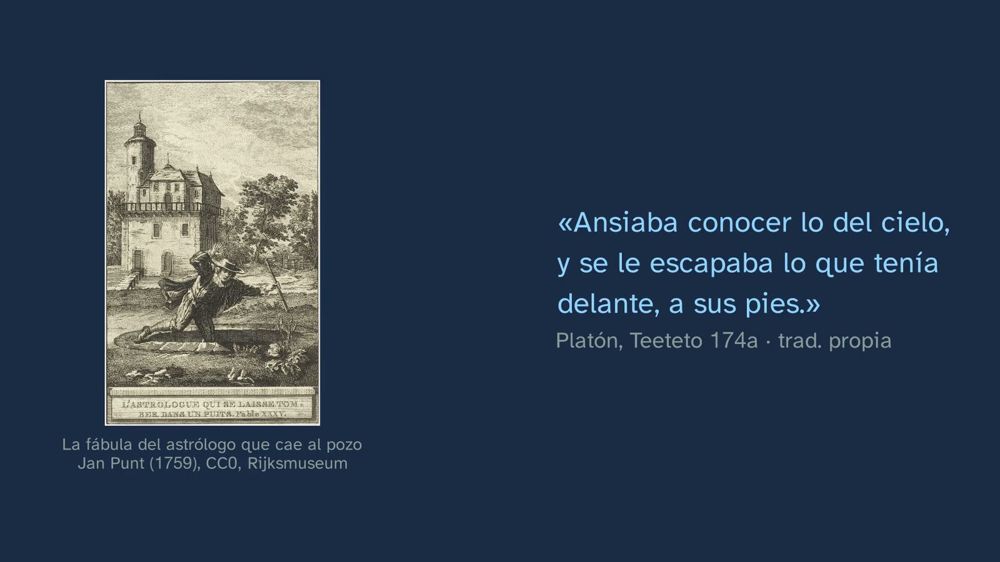
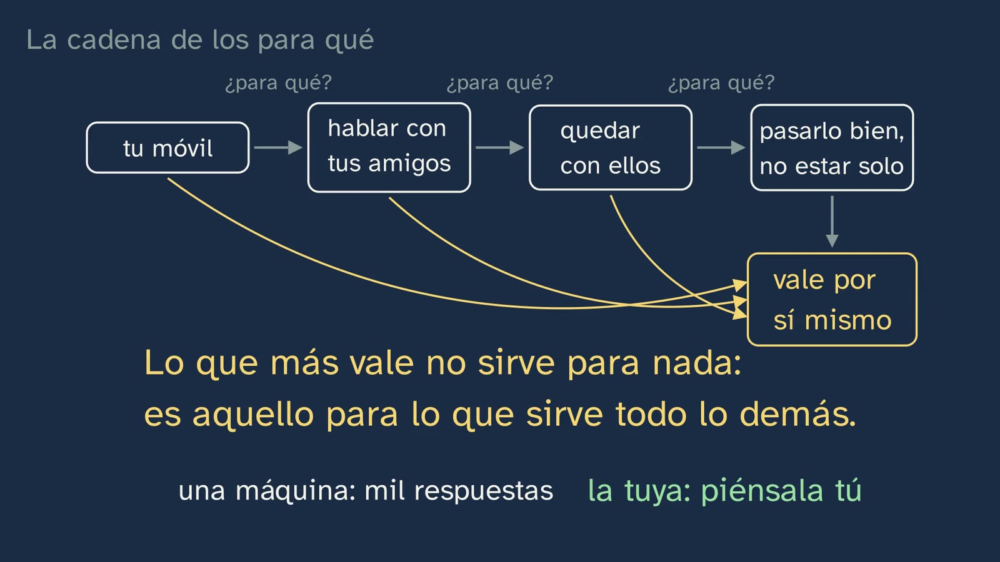
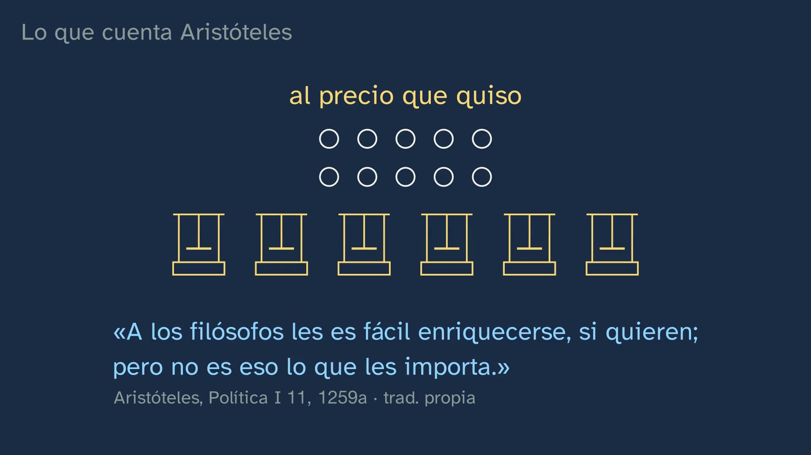
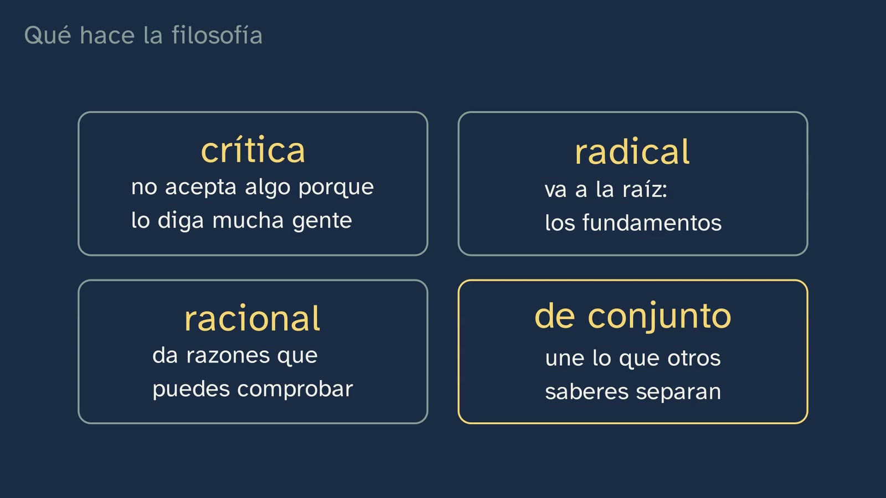
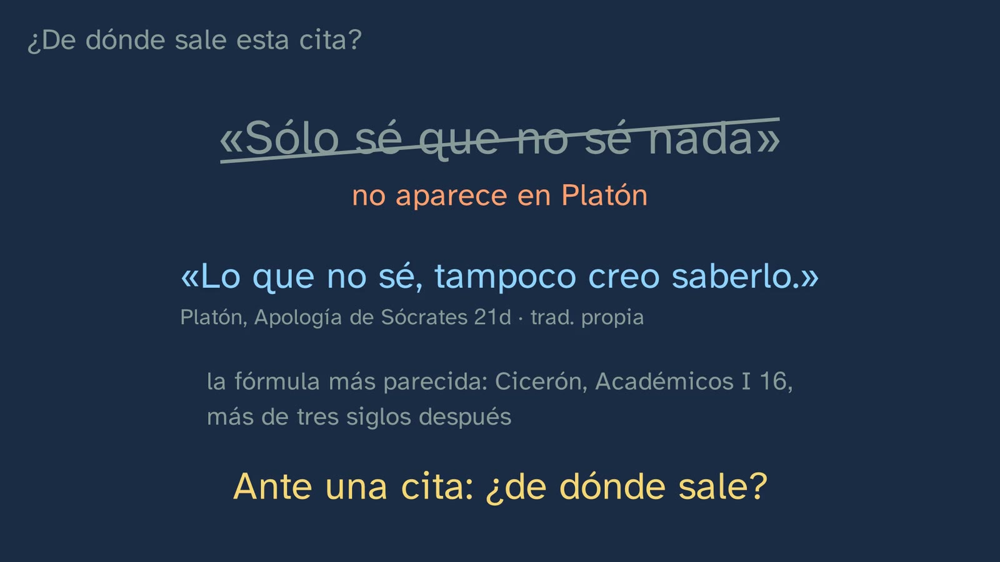

¿Para qué sirve un saber que no fabrica nada?
En pocas palabras
La clase abre el tema con la pregunta que más se le hace a la filosofía, en la forma que tiene hoy: si una máquina te contesta casi cualquier cosa en dos segundos, ¿para qué sirve un saber que no fabrica nada? No define la filosofía: la hace, y después mira qué ha hecho. Parte de dos historias de Tales de Mileto, la del pozo y la de las prensas de aceite, y las examina como fuentes: ¿quién las cuenta, cuándo y para qué? El centro de la clase es la cadena de los «para qué»: todo lo que sirve, sirve para otra cosa, y la cadena tiene que acabar en algo que valga por sí mismo (Aristóteles). De ahí salen los cuatro rasgos del saber filosófico (crítico, radical, racional y de conjunto), su origen en el asombro, la diferencia entre tener una opinión y defender una postura y la frase de la clase: no se trata de tener razón, sino de dar razones. Cada cita va con su obra y su lugar, y la clase desmonta dos que circulan mal: que Pitágoras inventó la palabra «filosofía» (es una leyenda) y que Sócrates dijo «sólo sé que no sé nada» (no está en Platón).
Objetivo. Al terminar, el alumnado sabrá explicar con un ejemplo los cuatro rasgos del saber filosófico (crítico, radical, racional y de conjunto) y por qué un saber que no fabrica nada puede ocuparse de lo que más importa: para qué hacemos todo lo demás. Y sabrá preguntar, ante una historia o una cita, quién la cuenta y de dónde sale.
Currículo
Real Decreto 243/2022, Filosofía (texto consolidado del BOE, comprobado el 28/09/2026). Todos los saberes son del bloque A, «La filosofía y el ser humano», apartado 1, «La reflexión filosófica en torno a la propia filosofía».
| Elemento | Qué dice el decreto | Dónde se trabaja |
|---|---|---|
| Saber básico (bloque A.1) | «Características y concepciones del saber filosófico.» | Los cuatro rasgos, el asombro y el filósofo como el que busca (Diotima, en el Banquete) |
| Saber básico (bloque A.1) | «Vigencia y utilidad de la filosofía: la importancia de filosofar en torno a los retos del siglo XXI.» | La pregunta de la clase, las prensas de Tales, la cadena de los para qué y la pregunta abierta sobre la inteligencia artificial |
| Saber básico (bloque A.1) | «Métodos y herramientas básicos del filósofo: el uso y análisis crítico de fuentes; […]» | ¿Quién cuenta la historia de Tales, cuándo y para qué? Pitágoras, como leyenda. ¿De dónde sale «sólo sé que no sé nada»? |
| Saber básico (bloque A.1) | Del mismo saber: «[…] el pensamiento y el diálogo argumentativos; […]» | La cadena de los para qué como argumento; opinión y postura |
| Competencia específica 1 | «Identificar problemas y formular preguntas acerca del fundamento, valor y sentido de la realidad y la existencia humana, a partir del análisis e interpretación de textos y otras formas de expresión filosófica y cultural, para reconocer la radicalidad y trascendencia de tales cuestiones, así como la necesidad de afrontarlas para desarrollar una vida reflexiva y consciente de sí.» | Del móvil a lo que da sentido a una vida entera |
| Competencia específica 2 | «Buscar, gestionar, interpretar, producir y transmitir correctamente información relativa a cuestiones filosóficas a partir del empleo contrastado y seguro de fuentes, el uso y análisis riguroso de las mismas, y el empleo de procedimientos elementales de investigación y comunicación, para desarrollar una actitud indagadora, autónoma, rigurosa y creativa en el ámbito de la reflexión filosófica.» | Las historias de Tales y las citas, examinadas como fuentes |
| Competencia específica 3 | «Usar y valorar adecuadamente argumentos y estructuras argumentales, a partir de su análisis tanto formal como informal, para producir y apreciar distintos tipos de discurso de forma rigurosa, y evitar modos dogmáticos, falaces y sesgados de sostener opiniones e hipótesis.» | El argumento de la cadena y el error típico: lo que cuesta cada opinión |
| Criterio 1.1 | «Reconocer la radicalidad y trascendencia de los problemas filosóficos mediante su reconocimiento, análisis y reformulación en textos y otros medios de expresión tanto filosóficos como literarios, históricos, científicos, artísticos o relativos a cualquier otro ámbito cultural.» | «¿Para qué sirve?» se reformula como «¿qué quiere decir servir?» |
| Criterio 2.1 | «Demostrar un conocimiento práctico de los procedimientos elementales de la investigación filosófica a través de tareas como la identificación de fuentes fiables, la búsqueda eficiente y segura de información y la correcta organización, análisis, interpretación, evaluación, producción y comunicación de esta, tanto digitalmente como por medios más tradicionales.» | La primera herramienta de la clase y el ejercicio 4: rastrear una cita |
| Criterio 3.3 | «Reconocer la importancia de la cooperación, el compromiso con la verdad, el respeto a la pluralidad y el rechazo de toda actitud discriminatoria o arbitraria, aplicando dichos principios a la práctica argumentativa y al diálogo con los demás.» | Las personas, el mismo respeto; las opiniones, no el mismo apoyo; y estar dispuesto a cambiar de idea |
Lo que hay que traer de la ESO: casi nada, y conviene saberlo. El decreto estatal de la ESO (Real Decreto 217/2022) no tiene ninguna materia llamada Filosofía. Lo más cercano es Educación en Valores Cívicos y Éticos, que todo el alumnado cursa en un solo curso de la etapa (35 horas en el horario mínimo) y donde aparecen «el pensamiento crítico y filosófico», «las virtudes del diálogo y las normas de argumentación» y «el desafío de la inteligencia artificial». Algunas comunidades ofrecen Filosofía como optativa en 4.º (Madrid, por ejemplo), así que buena parte del alumnado empieza aquí de cero. Sólo se da por sabido leer un texto argumentativo y distinguir una opinión de un dato.
Cómo está construida la clase
Capítulos del vídeo
Unos trece minutos, en diez capítulos. Sigue las bases formativas del canal y lo que el decreto pide a esta materia: su enseñanza y aprendizaje «no deben consistir en una mera exposición programática de temas y cuestiones, sino más bien en la generación de una experiencia real de descubrimiento de los interrogantes filosóficos» (introducción de la materia). Por eso la clase filosofa primero y pone nombre después.
| Capítulo | Qué pasa | Por qué así |
|---|---|---|
| Qué vamos a ver | Javier saluda y presenta el tema en el mapa de sus siete clases; dos son laboratorios de ideas (los bocadillos). | Saber dónde se está y adónde se va ordena lo que se aprende. |
| La pregunta | El gancho: una máquina contesta casi todo en dos segundos. Tales, hacia el 600 a. C., y la historia del pozo que Platón recoge como algo que ya se contaba en su tiempo (Teeteto 174a–b). ¿Tiene razón la criada que se burló de él? | Una pregunta de hoy y una historia antigua que la hace sentir. La respuesta se deja en el aire hasta el final. |
| Lo que ya sabes | ¿Qué significa «filosofía»? Amor a la sabiduría. Que Pitágoras inventó la palabra se cuenta como leyenda: la narra por primera vez Heráclides Póntico, discípulo de Platón, siglo y medio después y dentro de un diálogo. La idea sí está en Platón: en el Banquete (204a), Diotima explica que ningún dios filosofa, porque ya es sabio. | Recuperar lo sabido y, a la vez, separar lo que se cuenta de lo que sabemos. |
| Tales y las aceitunas | El reproche «la filosofía no sirve para nada» ya está en Aristóteles (Política I 11, 1259a). La predicción: Tales prevé una gran cosecha y tiene poco dinero; ¿cómo te harías rico? Pausa. Las prensas de Mileto y de Quíos, reservadas baratas y realquiladas al precio que quiso. | Predecir antes de ver: el alumno se compromete con una respuesta antes de conocer la de Tales. |
| ¿Cómo lo sabemos? | De Tales no se conserva nada escrito. Platón y Aristóteles cuentan las dos historias más de dos siglos después, como algo que «se dice», y cada uno para algo: Platón, para retratar al filósofo (y luego le da la vuelta a la burla, Teeteto 175b–d); Aristóteles, para explicar el monopolio. | La pregunta del canal aplicada a las historias de la propia filosofía: el análisis crítico de fuentes del decreto. |
| La cadena de los para qué | Qué quiere decir «servir»: el móvil, los amigos, quedar, pasarlo bien… ¿Puede seguir para siempre? Pausa. Aristóteles: el deseo sería «vacío y vano» (Ética a Nicómaco I 2). Lo que más vale no sirve para nada: es aquello para lo que sirve todo lo demás. Su saber más alto, dice, «no es productivo», es «la única ciencia libre» y, aunque todas las demás son más necesarias, «ninguna es mejor» (Metafísica I 2). Dos avisos: «libre» se opone a «esclavo», y Aristóteles defendía la esclavitud; y no todos creen que la filosofía sirva. Javier, a cámara: lo importante hasta aquí. | Primero la intuición, con un objeto de todos los días; después, el texto. Los avisos, en la misma clase: ni el gran autor queda sin crítica ni la utilidad de la filosofía se da por zanjada. |
| Qué hace la filosofía | No qué hemos dicho, sino cómo lo hemos hecho: los cuatro rasgos, cada uno sacado de un paso de la clase. El asombro (Teeteto 155d; Metafísica I 2, 982b). Sócrates y la vida sin examen (Apología 38a). Y «sólo sé que no sé nada», que no está en Platón: la fórmula más parecida es de Cicerón (Académicos I 16). | Los rasgos se reconocen en lo que uno acaba de hacer, no se memorizan. La cita falsa, desmontada, es una herramienta para la vida digital. |
| ¿Todas las opiniones valen lo mismo? | El error típico, con lo que tiene de verdad. Un argumento no obliga a pensar nada: enseña lo que cuesta cada opinión. Una opinión se tiene; una postura se defiende. | El error, planteado con respeto y desmontado razonando. La frase de la clase se repite, avisando de que se repite. |
| ¿La filosofía no avanza? | La portada de los Principia de Newton (1687): «principios matemáticos de la filosofía natural». La palabra scientist, propuesta hacia 1833, no gustó (Whewell, 1834). Russell (1912): lo que se resuelve se va con otro nombre. | Una objeción seria, respondida con documentos y con su «en parte». |
| Para practicar y seguir pensando | Recapitulación (¿tenía razón la criada? En parte), cuatro ejercicios, la pregunta abierta sobre la IA y el anuncio de la clase 2, el primer laboratorio de ideas. | Práctica espaciada: las soluciones abren la clase siguiente. La pregunta abierta está también en los comentarios del vídeo. |

Plan de una sesión de 50 minutos
| Minutos | Qué se hace |
|---|---|
| 0–5 | Sin vídeo: la pregunta del gancho, por escrito y en una frase. Si una máquina te contesta casi todo, ¿para qué sirve un saber que no fabrica nada? Se guarda para el final (está en la hoja). |
| 5–13 | Vídeo de 0:00 a 4:47, hasta «¿puede seguir para siempre?». Parar en 1:26 («¿Tiene razón la criada?») y en 2:55 («¿Cómo lo aprovecharías tú para hacerte rico?»), y dejar un minuto para contestar en parejas. |
| 13–25 | La actividad, primera parte: la cadena de los para qué, en parejas, antes de oír a Aristóteles. |
| 25–34 | Vídeo de 4:47 a 9:14: Aristóteles, los dos avisos, los cuatro rasgos, Sócrates y la cita. Cada pareja compara su cadena con lo que dice Aristóteles. |
| 34–44 | La actividad, segunda parte: un debate breve con la regla de la clase. |
| 44–50 | Vídeo de 9:14 al final (13:14). El capítulo «¿Todas las opiniones valen lo mismo?» llega después del debate a propósito: pone nombre a lo que acaban de hacer. Releer la frase del principio: ¿la cambiarías? Los ejercicios, para casa con la hoja. |
Errores típicos y cómo se tratan
Son confusiones frecuentes que el diseño prevé; no hay, que sepamos, una investigación didáctica tan sólida sobre ellas como la de las ciencias.
- «En filosofía, cada uno tiene su opinión, y todas valen lo mismo». Es el que la clase trata de frente (9:14). Tiene algo de verdad: hay desacuerdos, y nadie puede obligar a nadie a pensar como él. Pero no vale cualquier respuesta: quien sostiene que la cadena de los para qué sigue para siempre tiene que aceptar lo que viene detrás, que nada de lo que hacemos tendría sentido. Un argumento no obliga a pensar nada: enseña lo que cuesta cada opinión. Una opinión se tiene; una postura se defiende, con razones, respondiendo a las objeciones y cambiándola si otro tiene mejores razones. Conviene separar bien las dos mitades de la frase de la clase («todas las personas merecen el mismo respeto, pero no todas las opiniones tienen el mismo apoyo»), porque es fácil oír en «tu opinión no vale lo mismo» un «tú no vales lo mismo».
- «La filosofía no sirve para nada», y su variante, «la filosofía no avanza». La primera ya se la echaban en cara a Tales: Aristóteles la recoge en la Política (I 11, 1259a9–10), escrita entre el 335 y el 322 a. C. La clase no la refuta de un golpe: muestra que «servir» no es tan simple (la cadena) y avisa de que no todos creen que la filosofía sirva; los mejores argumentos en contra se oyen en la clase 7. La segunda la explica Russell en parte, y él mismo lo dice: en cuanto se puede saber algo seguro de un asunto, deja de llamarse filosofía (The Problems of Philosophy, 1912, cap. XV, p. 240). Enseguida añade que eso es «sólo una parte de la verdad»: hay preguntas que quizá no tengan nunca una respuesta segura.
- Dar por buenas las historias y las citas. Que Pitágoras inventó la palabra «filosofía» es una leyenda: aparece por primera vez en Heráclides Póntico, en un diálogo y no en una obra de historia, y la idea que le atribuye es platónica (Huffman, en la Stanford Encyclopedia of Philosophy, siguiendo a Burkert, 1960). El pozo y las prensas de Tales, los dos autores los cuentan como algo que «se dice». Y «sólo sé que no sé nada» no está en Platón: su Sócrates dice que lo que no sabe tampoco cree saberlo (Apología 21d), y en otro pasaje afirma saber algo con rotundidad: que cometer injusticia es malo y vergonzoso (Apología 29b). La fórmula más parecida es de Cicerón (Académicos I 16), más de tres siglos después.
- «Aristóteles dice que la filosofía es inútil». No lo dice. Dice que el saber que más valora «no es productivo» (Metafísica I 2, 982b11), que es «la única ciencia libre, pues es la única que existe para sí misma» (982b24–28) y que «todas son más necesarias que ella, pero ninguna es mejor» (983a10–11): menos necesaria, no inútil. Y habla de «esta ciencia», la de las primeras causas, no de la asignatura de hoy. La imagen del hombre libre presupone la esclavitud, que Aristóteles defendía: el vídeo lo dice, y la clase 6 lo retoma.
- «Crítica», «radical» y «asombro», con su sentido de la calle. En la calle, «crítica» es hablar mal de algo y «radical» es extremista. En la clase, crítica es no aceptar algo porque lo diga mucha gente ni porque se haya dicho siempre, y radical viene de raíz: buscar los fundamentos. Y el asombro no es admirar algo bonito, sino atascarse ante algo que no encaja: en el Teeteto, justo antes de la frase sobre el asombro, Teeteto confiesa que a veces, cuando mira de verdad esas paradojas, le da vértigo (155c). Conviene comprobarlo en las respuestas al ejercicio 2.
- «Una máquina que contesta ya piensa», o «con la IA ya no hace falta pensar». Son dos respuestas rápidas a una pregunta abierta, y la clase no da la suya: la deja para seguir pensando y la retoma en la clase 7. Lo que sí dice es otra cosa: una máquina te puede dar mil respuestas sobre qué vale la pena en la vida, pero cuál es la tuya, y si esas respuestas se sostienen, tienes que pensarlo tú.

Preguntas y soluciones
Para y piensa (dentro del vídeo)
- ¿Tiene razón la criada? (1:26) La clase la deja en el aire y la cierra en la recapitulación (11:37): en parte. El filósofo puede tropezar con lo que tiene a sus pies, pero la filosofía se ocupa de otra cosa: para qué queremos lo que fabricamos, y qué vale por sí mismo. Platón mismo le da la vuelta a la burla poco después (Teeteto 175b–d): cuando al hombre práctico le preguntan qué es la justicia, el que se marea es él. Las mejores respuestas distinguen en qué tiene razón la criada y en qué no.
- ¿Qué significa la palabra «filosofía»? Viene del griego: phílos, amor o amistad, y sophía, sabiduría. Amor a la sabiduría. Si alguien añade que la inventó Pitágoras, el vídeo le responde enseguida que eso es una leyenda.
- Tales prevé una gran cosecha de aceitunas y tiene poco dinero. ¿Cómo lo aprovecharías para hacerte rico? (2:55) Según Aristóteles, todavía en invierno dejó señales para reservar todas las prensas de aceite de Mileto y de Quíos, baratas porque nadie más pujaba por ellas; cuando llegó la cosecha y todos las necesitaron a la vez, las realquiló al precio que quiso. Es un monopolio, y así lo llama Aristóteles. Van en la buena dirección las respuestas que usan la información por adelantado para hacerse con lo que todos necesitarán a la vez; con poco dinero, comprar aceitunas o tierras da poco. Si alguien habla del «primer contrato de futuros», es un anacronismo: el texto habla de señales para alquilar prensas.
- ¿Puede seguir para siempre la cadena de los para qué? (4:47) No, si lo que hacemos ha de tener sentido. Aristóteles lo escribió así: si lo eligiéramos todo por otra cosa, «se iría al infinito, y el deseo sería vacío y vano» (Ética a Nicómaco I 2, 1094a18–22). Tiene que haber algo que queramos por sí mismo. Para el profesorado: el texto es condicional («si hay, pues, algún fin de nuestros actos que queremos por sí mismo…») y admite una objeción clásica que la clase no hace: de que cada cadena termine en algo no se sigue que todas terminen en lo mismo. Es buen material para el debate de la actividad.

De la hoja del alumnado
- Antes de empezar: ¿para qué sirve un saber que no fabrica nada? No hay respuesta correcta: es su punto de partida. Al final de la clase la releen (ver abajo).
- ¿Quién cuenta cada historia de Tales, cuándo y para qué? El pozo lo cuenta Platón en el Teeteto (174a–b), escrito hacia el 369 a. C., para retratar al filósofo que mira a lo alto y tropieza con lo de abajo; poco después le da la vuelta a la burla (175b–d). Las prensas las cuenta Aristóteles en la Política (I 11, 1259a), escrita entre el 335 y el 322 a. C., para explicar cómo se hace un monopolio. Los dos las presentan como algo que «se dice», más de dos siglos después de Tales, que vivió hacia el 600 a. C. y del que no se conserva nada escrito. (El vídeo redondea: «unos dos siglos después».)
- Los cuatro rasgos: ¿qué hicimos en la clase para cada uno? Crítica: no dimos por bueno que la filosofía no sirve para nada, aunque lo repita todo el mundo; lo examinamos. Radical: preguntamos qué quiere decir «servir», que todos dábamos por supuesto. Racional: dimos razones que se pueden comprobar y rechazar, ni «porque lo digo yo» ni «porque lo dijo Aristóteles». De conjunto: empezamos con un móvil y acabamos preguntando qué da sentido a una vida entera.
- Tu cadena de «para qué». Ver el ejercicio 1 de la práctica y la actividad.
- Al final de la clase: ¿cambiarías tu primera respuesta? Vale cualquier respuesta que dé una razón. Merece la pena valorar a quien dice qué razón le hizo cambiar, o qué objeción sabría ahora responder: cambiar de idea por una buena razón es un acierto, no una derrota.

Para practicar (las soluciones abren la clase 2)
Son preguntas abiertas: no tienen una única respuesta, pero sí respuestas mejores y peores. Van los criterios y un ejemplo de buena respuesta.
- Haz tu propia cadena de «para qué», empezando por algo que haces cada día, hasta llegar a algo que valga por sí mismo. Criterios: cada eslabón responde de verdad al «¿para qué?» del anterior, es decir, da un fin y no una causa («porque me lo mandan» contesta a otra pregunta); la cadena llega a algo de lo que ya no tiene sentido preguntar «¿para qué?», y el alumno dice por qué; y no se para en algo que todavía sirve para otra cosa, como el dinero o aprobar, que casi siempre se quieren para otra cosa. Ejemplo: «Pongo el despertador → para llegar a tiempo al instituto → para no perderme las clases → para aprender y aprobar → para poder estudiar lo que me gusta → para dedicarme a algo que me guste → para vivir bien. ¿Y vivir bien, para qué? La pregunta suena rara: vale por sí mismo». Merece un punto extra quien encuentra dos finales distintos (entender algo y estar con los suyos, por ejemplo): es la objeción de que no todas las cadenas tienen por qué acabar en lo mismo.
- Busca fuera de esta clase, en una noticia o en una conversación, un ejemplo de cada rasgo de la filosofía. Criterios: los cuatro, cada uno bien identificado y con su porqué. Crítica: alguien no da algo por bueno sólo porque lo diga mucha gente o porque se haya hecho siempre (no vale «alguien habló mal de algo»). Radical: alguien pregunta qué significa algo que todos dan por supuesto: qué es ser libre, qué es justo, qué es un amigo. Racional: alguien da razones que se pueden comprobar y responde a las objeciones, en lugar de «porque lo digo yo» o «porque lo dijo alguien famoso». De conjunto: alguien une lo que otros tratan por separado, como una noticia sobre la inteligencia artificial que obliga a pensar a la vez en la técnica, en las leyes y en lo que es justo. Ejemplo: «En una discusión sobre los deberes, alguien dijo: "antes de decidir si hay que ponerlos, ¿qué quiere decir aprender?". Eso es radical: fue a lo que todos daban por supuesto».
- ¿Qué diferencia hay entre tener una opinión y defender una postura? La del vídeo: una opinión se tiene; una postura filosófica se defiende, con razones, respondiendo a las objeciones y cambiándola si otro tiene mejores razones. Y la clase añade que todas las personas merecen el mismo respeto, pero no todas las opiniones tienen el mismo apoyo. Criterios: las tres notas de la postura (razones, objeciones y disposición a cambiar); no confundir el respeto a la persona con el valor de su opinión; y un ejemplo propio. Ejemplo: «"Creo que X" es una opinión. "Sostengo X por A y por B; a quien me objeta C le respondo D; y si me enseñaran E, cambiaría de idea" es una postura».
- Busca una frase famosa atribuida a un filósofo, de las que circulan por internet, y averigua si de verdad la dijo, y dónde. Criterios: la frase, copiada tal cual, y dónde circula; la obra y el lugar donde tendría que estar, o el intento de encontrarlos; un veredicto (está tal cual; está, pero dice otra cosa; no está; o no se puede saber); y las fuentes consultadas. Ejemplo, con una versión deformada que sirve de modelo: «Me encuentro "La filosofía es la más inútil de las ciencias, pero la mejor", atribuida a Aristóteles. En la Metafísica (libro I, cap. 2, 983a10–11) dice que "todas son más necesarias que ella, pero ninguna es mejor". Veredicto: está, pero dice otra cosa: habla de "necesaria", no de "útil", y se refiere a la ciencia de las primeras causas». Más casos comprobados, para quien no encuentre el suyo, en la actividad.

Para seguir pensando. Esta clase la ha escrito una inteligencia artificial y la ha revisado una persona. ¿Puede una máquina filosofar, o sólo contestar? ¿Y cómo lo sabríamos? No tiene respuesta de libro, y ni el vídeo ni esta ficha dan la suya. Algunas pistas para orientar el debate sin cerrarlo:
- Separar las dos preguntas. Una es qué sería filosofar: ¿basta con dar respuestas que parecen argumentos, o hace falta asombrarse, examinar lo que uno mismo da por supuesto, estar dispuesto a cambiar de idea, que la pregunta le importe a uno? La otra es cómo lo sabríamos: ¿por lo que dice, por cómo llega a decirlo, por lo que le pasa por dentro? Y, de paso, ¿cómo sabemos que otra persona filosofa?
- Usar los cuatro rasgos como criterios. ¿Qué contaría como prueba de que una máquina es crítica, radical, racional y de conjunto? ¿Y de que no lo es?
- Las posturas, con su mejor argumento. Hay quien piensa que, si algo argumenta como una persona, no hay razón para negarle que piense; hay quien piensa que contestar no es comprender; y hay quien cree que la pregunta no se puede responder hasta que digamos qué es pensar. El profesor modera y no da su veredicto.
- Un dato, no una opinión: esta clase la escribió una IA y la revisó una persona, que decidió qué se publicaba. ¿Qué parte del trabajo fue de cada una?
La pregunta vuelve en la clase 7 («¿Sirve la filosofía en la era de la IA?») y en el bloque B.2 del currículo: «El problema mente-cuerpo. La filosofía de la mente y el debate en torno a la inteligencia artificial».
Una actividad para el aula
La cadena de los para qué, en parejas, y un debate con una regla (unos 22 minutos en dos partes, dentro del plan de 50; la segunda parte, con todo el grupo).
Material: la hoja del alumnado (su apartado de la cadena) y unas tarjetas con puntos de partida: «estudiar Bachillerato», «sacar buena nota», «ganar dinero», «hacer deporte», «tener muchos seguidores», «venir a clase de Filosofía». Mejor que no sea el móvil del vídeo.
Primera parte, antes de oír a Aristóteles (12 minutos; el vídeo se para en 4:47).
- La cadena (8 minutos; criterio 1.1). Cada pareja saca una tarjeta. Uno pregunta «¿y eso, para qué?» y el otro contesta; cambian de papel en cada eslabón, y lo apuntan en la hoja. Se paran cuando la pregunta deje de tener sentido o cuando la cadena vuelva a un eslabón anterior. Antes de terminar, deciden: ¿podría seguir para siempre? ¿Por qué?
- Los finales, en la pizarra (4 minutos). El profesor apunta sólo el último eslabón de cada pareja. ¿Coinciden? Si alguna cadena se ha parado en el dinero o en aprobar, se le devuelve la pregunta: «¿y eso, para qué?».
Después, el vídeo de 4:47 a 9:14: cada pareja compara su respuesta con la de Aristóteles.
Segunda parte, el debate (10 minutos; competencia específica 3 y criterio 3.3).
- La tesis. Una en la pizarra, a elegir: «Si algo no sirve para nada, no vale nada»; «Todas nuestras cadenas acaban en lo mismo»; o, para un grupo que vaya rápido, «Sólo puede dedicarse a un saber que no fabrica nada quien tiene lo necesario resuelto» (Aristóteles cuenta que ese saber empezó a buscarse cuando ya existía casi todo lo necesario, Metafísica I 2, 982b22–24; y es una manera de retomar el primer aviso del vídeo: ¿quién hacía el trabajo?).
- La regla de la clase: no se trata de tener razón, sino de dar razones. En la práctica, tres normas: antes de responder a alguien, se repite con las propias palabras su razón, y quien la dio dice si es eso; se responde a la razón, no a la persona; y cambiar de idea está permitido y se dice en voz alta: «he cambiado porque…». El profesor modera y no da su veredicto.
- Cierre (2 minutos). Cada cual escribe dos frases: «Mi postura es… porque…» y «La mejor objeción que he oído es…».
Para el profesorado: la objeción de que cada cadena puede acabar en un fin distinto (ver el «para y piensa» de la cadena) es la mejor manera de que el debate no se quede en darle la razón a Aristóteles. Y si el grupo pregunta si Aristóteles tenía razón, la respuesta honesta es la de la clase: su argumento enseña lo que cuesta pensar lo contrario, pero no obliga a nadie.
Otra opción: rastrear una cita (15 minutos, en parejas, con un ordenador o un móvil; es el ejercicio 4 hecho en clase, y trabaja el criterio 2.1). Cada pareja recibe una frase atribuida a un filósofo y sigue cuatro pasos: copiarla tal cual y decir dónde circula; buscar la obra y el lugar donde tendría que estar; dar un veredicto (está tal cual; está, pero dice otra cosa; no está; o no se puede saber); y preguntarse quién la difunde y para qué. Cuatro casos comprobados en su original, con su solución:
- «Sólo sé que no sé nada», de Sócrates: no está en Platón. Su Sócrates dice que lo que no sabe tampoco cree saberlo (Apología 21d); la fórmula más parecida es de Cicerón (Académicos I 16), más de tres siglos después.
- «La filosofía es la más inútil de las ciencias, pero la mejor», atribuida a Aristóteles (una versión deformada, preparada para la actividad): está, pero dice otra cosa. «Todas son más necesarias que ella, pero ninguna es mejor» (Metafísica I 2, 983a10–11): «inútil» no está en el texto.
- «Para Russell, el mayor valor de la filosofía es su incertidumbre»: dice otra cosa. Escribe que su valor hay que buscarlo «en buena parte» (largely) en su incertidumbre (The Problems of Philosophy, 1912, pp. 242–243), y dos páginas después pone su valor principal, «quizá», en otra parte: en la grandeza de lo que contempla y en liberarnos de los fines estrechos y personales (p. 244).
- «Tales predijo el eclipse del 28 de mayo del 585 a. C.»: Heródoto (I 74) cuenta que Tales había anunciado el año, no el día; el día lo calcularon astrónomos modernos. Si de verdad lo predijo, y cómo, sigue discutiéndose.

Fuentes
- Real Decreto 243/2022, texto consolidado (BOE): https://www.boe.es/buscar/act.php?id=BOE-A-2022-5521.
- Platón (Teeteto 155c–d y 174a–175d, Apología 21d, 29b y 38a, Banquete 204a), Aristóteles (Metafísica I 2–3, Política I 11, Ética a Nicómaco I 2), Diógenes Laercio (I 12) y Heródoto (I 74), en griego (Perseus): https://scaife.perseus.org/.
- Cicerón, Académicos I 16 y Tusculanas V 8–9 (The Latin Library): https://www.thelatinlibrary.com/cicero/acad.shtml y https://www.thelatinlibrary.com/cicero/tusc5.shtml.
- Pitágoras y la palabra «filosofía»: C. Huffman, «Pythagoras», Stanford Encyclopedia of Philosophy, §4: https://plato.stanford.edu/entries/pythagoras/. Burkert, W. (1960). Platon oder Pythagoras? Zum Ursprung des Wortes «Philosophie». Hermes 88, 159–177.
- Russell, B. (1912). The Problems of Philosophy, cap. XV, pp. 237–250 (primera edición, Internet Archive): https://archive.org/details/problemsofphilos00russuoft.
- Whewell, W. (1834). Reseña de On the Connexion of the Physical Sciences, de Mary Somerville. The Quarterly Review 51, donde cuenta que la palabra scientist se propuso y no gustó (Internet Archive): https://archive.org/download/quarterlyreview47smitgoog/quarterlyreview47smitgoog_djvu.txt.
- El eclipse de Tales, estado de la cuestión: Querejeta, M. (2011). On the Eclipse of Thales, Cycles and Probabilities. Culture and Cosmos 15(1), 5–16: https://arxiv.org/abs/1307.2095.
- Imágenes de dominio público o CC0 (Wikimedia Commons): la fábula del astrólogo que cae al pozo, de Jan Punt (1759, Rijksmuseum): https://commons.wikimedia.org/wiki/File:Astroloog_valt_in_put_L%27Astrologue_qui_se_laisse_tomber_dans_un_puits._Fable_XXXV._(titel_op_object),_RP-P-OB-66.239.jpg; Tales, grabado de W. Meyer (1875): https://commons.wikimedia.org/wiki/File:Illustrerad_Verldshistoria_band_I_Ill_107.jpg; Aristóteles, de F. Hayez (1811): https://commons.wikimedia.org/wiki/File:Francesco_Hayez_Aristotle.jpg; Sócrates, grabado de P. Pontius según Rubens (1638): https://commons.wikimedia.org/wiki/File:Antieke_buste_van_Socrates_Socrates_Sophronisci_Filivs_Atheniesis_(titel_op_object),_RP-P-OB-16.423.jpg; La escuela de Atenas, de Rafael: https://commons.wikimedia.org/wiki/File:The_School_of_Athens_by_Raffaello_Sanzio_da_Urbino.jpg; la portada de los Principia de Newton (1687): https://commons.wikimedia.org/wiki/File:Prinicipia-title.png.
- La ESO: Real Decreto 217/2022, texto consolidado (BOE): https://www.boe.es/buscar/act.php?id=BOE-A-2022-4975 (Educación en Valores Cívicos y Éticos, artículo 10 y anexos II y IV).
- Las traducciones de las citas son nuestras, literales y cotejadas con el original.
,_RP-P-OB-66.239.jpg){kind=link}


,_RP-P-OB-16.423.jpg){kind=link}


Sobre esta clase
GinCol Lab es un canal gratuito de ciencia para curiosos. Javier es un personaje ilustrado con voz sintética, diseñada por ordenador con Qwen3-TTS, que no imita a ninguna persona conocida; el guion y esta ficha los escribe una IA (Claude, de Anthropic) y los revisa una persona antes de publicarse. Cada cita está comprobada en el texto original de su autor, y las obras de arte que se ven son reales y de dominio público o CC0. Si ves un error, dínoslo: aprender también es corregir.
Esta ficha se publica con licencia Creative Commons Reconocimiento 4.0: puedes copiarla, adaptarla y usarla en tu aula citando a GinCol Lab.
Cómo citar esta ficha
GinCol Lab (2026). ¿Para qué sirve un saber que no fabrica nada? Ficha docente de GinCol Lab: Filosofía · 1.º de Bachillerato · ¿Qué es la filosofía y para qué sirve? · Clase 1 de 7. https://gincollab.github.io/aula/filosofia/t01-c1/. CC BY 4.0.
Ficha docente de GinCol Lab · CC BY 4.0 · Código fuente y erratas